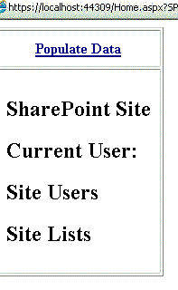
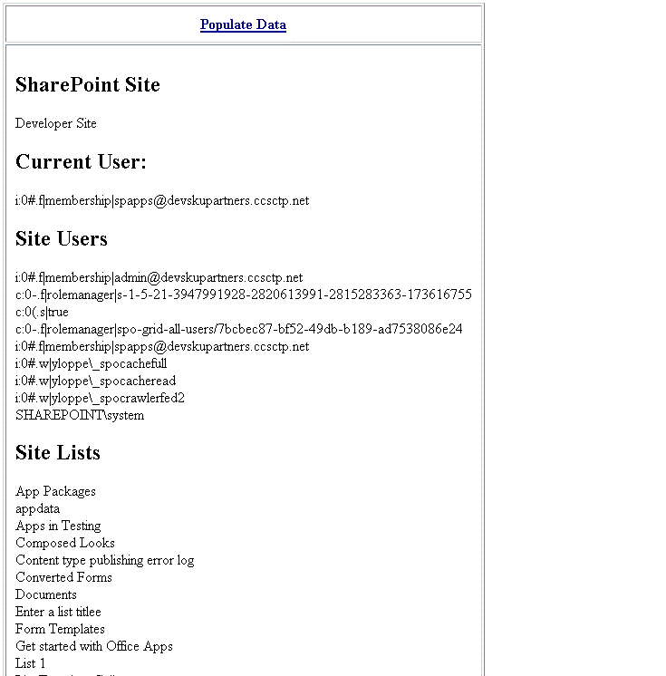

The sample demonstrates how to read data that conforms with the OData protocol from the REST endpoints where the basic SharePoint entities, such as lists and users, are exposed. Additionally, it demonstrates how to parse Atom-formatted XML returned from these endpoints.
The code that uses the REST APIs is located in the Home.aspx.cs file of the BasicSelfHostedAppRESTWeb project. The following screen shot shows how the Home.aspx page in the app appears after you install and launch the app.
Figure 1. Home.aspx page in the Hello World remote app for SharePoint using REST

For more information about the SharePoint REST APIs, see Programming using the SharePoint 2013 REST service. For more information about working with JSON, Atom, and OData, see OData: JavaScript Object Notation (JSON) Format and OData: AtomPub Format.
This sample requires the following:
The sample app contains the following:
To configure the Hello world remote app using REST sample, update the SiteUrl property of the solution with the URL of the home page of your SharePoint 2013 Preview site.
Press F5 to build and deploy the app.
The following figure shows an example of the kinds of information that this sample app can read and display.
Figure 2. View populated data about the parent web

The following table lists common configuration and environment errors that prevent the sample from running or deploying properly and how to solve them.
| Problem | Solution |
|---|---|
| Visual Studio does not open the browser after you press the F5 key. | Set the app for SharePoint project as the startup project. |
| HTTP error 405 Method not allowed. | Locate the applicationhost.config file in %userprofile%\Documents\IISExpress\config.
Locate the handler entry for StaticFile, and add the verbs GET, HEAD, POST, DEBUG, and TRACE. |
First version: July 16, 2012